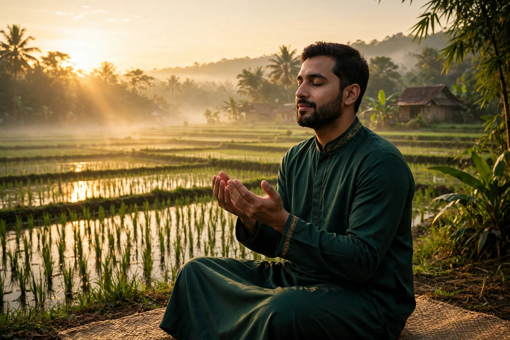
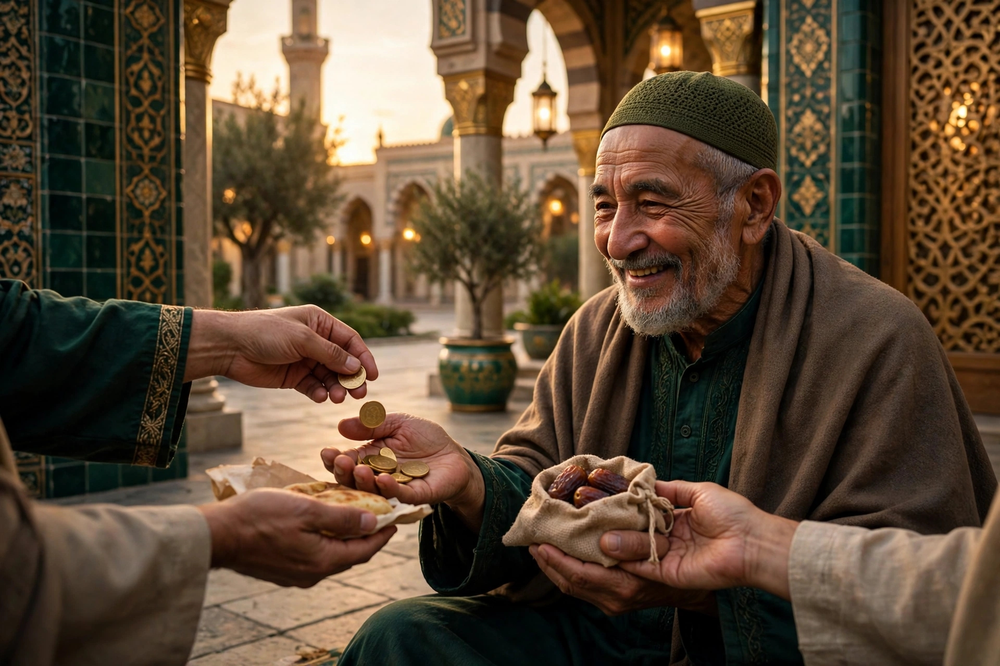
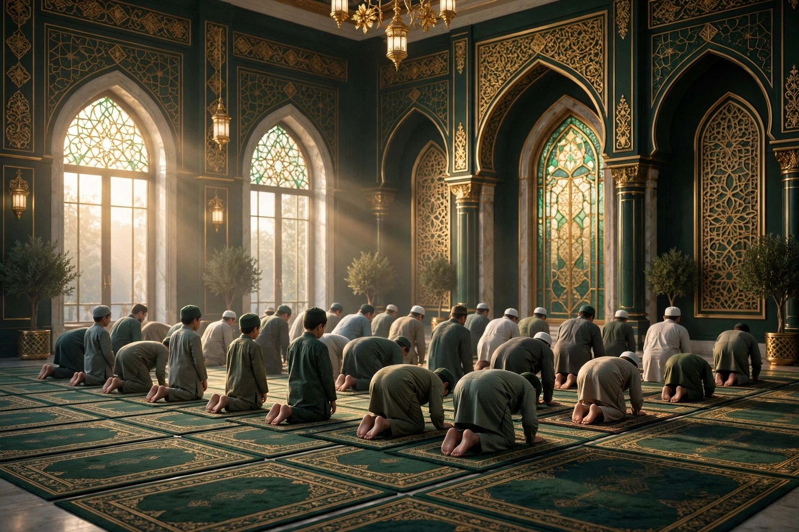
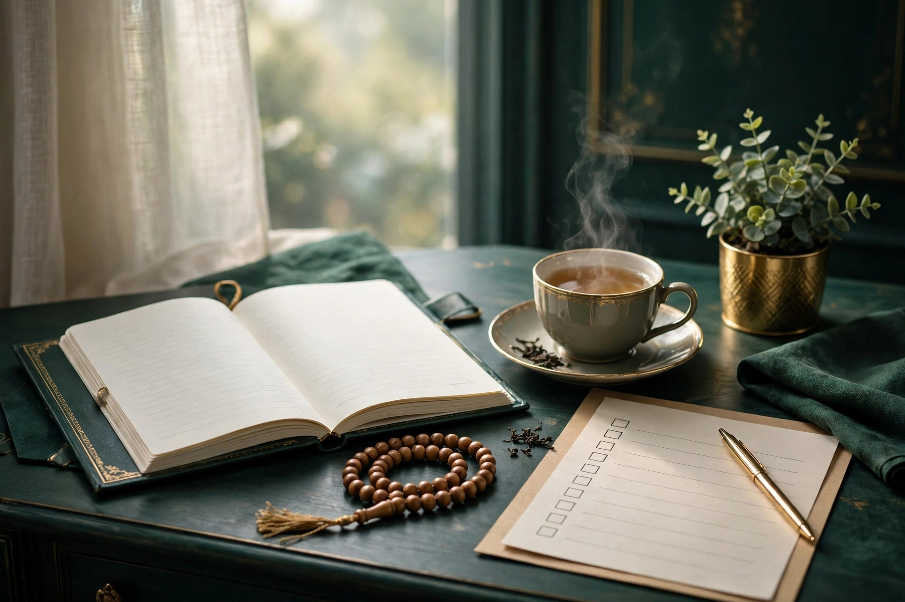
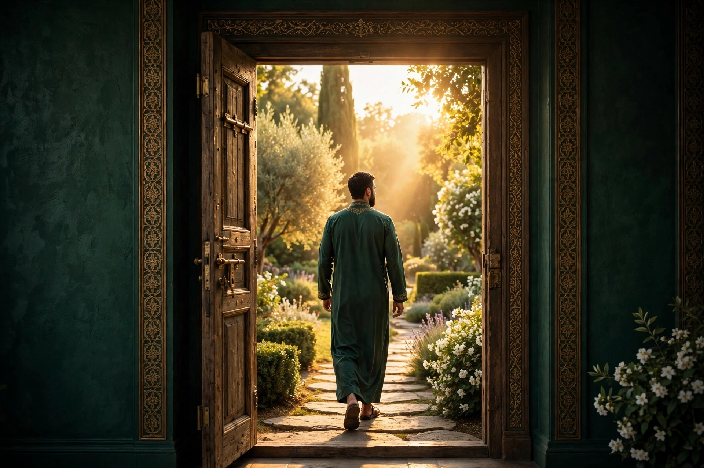

7 PINTU KETENANGAN1 / 9
PINTU 01 — ISTIGHFARIstighfar
QS. Nuh: 10-12 — "Mohonlah ampun kepada Tuhanmu, niscaya Dia akan mengirimkan hujan kepadamu dengan lebat, dan memperbanyak harta dan anak-anakmu."
AMALAN: Setelah sholat, Astaghfirullah 100x pelan-pelan, tanpa pegang HP dulu.
Audio Pintu 1
← Geser kiri / kanan → • Audio habis = pindah otomatis

7 PINTU KETENANGAN2 / 9
PINTU 02 — SYUKURSyukur
QS. Ibrahim: 7 — "Jika kamu bersyukur, pasti Aku akan menambah (nikmat) kepadamu."
AMALAN: Tiap malam, tulis 3 hal yang kamu syukuri hari ini.
Audio Pintu 2
← Geser kiri / kanan → • Audio habis = pindah otomatis

7 PINTU KETENANGAN3 / 9
PINTU 03 — SABARSabar
QS. Al-Baqarah: 153 — "Jadikanlah sabar dan sholat sebagai penolongmu. Sesungguhnya Allah bersama orang-orang yang sabar."
AMALAN: Emosi naik? Jangan balas chat dulu. Wudhu dulu, sholat 2 rakaat dulu.
Audio Pintu 3
← Geser kiri / kanan → • Audio habis = pindah otomatis

7 PINTU KETENANGAN4 / 9
PINTU 04 — SEDEKAHSedekah
QS. Al-Baqarah: 261 — "Perumpamaan orang yang menginfakkan hartanya seperti sebutir biji yang menumbuhkan tujuh tangkai."
AMALAN: Mulai Rp 2.000 tiap subuh. Yang penting rutin.
Audio Pintu 4
← Geser kiri / kanan → • Audio habis = pindah otomatis

7 PINTU KETENANGAN5 / 9
PINTU 05 — SILATURAHMISilaturahmi
HR. Bukhari Muslim — "Barangsiapa ingin dilapangkan rezekinya dan dipanjangkan umurnya, hendaklah ia menyambung silaturahmi."
AMALAN: Minggu ini chat 1 orang yang lama tidak kamu sapa. Cuma tanya kabar.
Audio Pintu 5
← Geser kiri / kanan → • Audio habis = pindah otomatis

7 PINTU KETENANGAN6 / 9
PINTU 06 — SHOLAT TEPAT WAKTUSholat Tepat Waktu
QS. An-Nisa: 103 — "Sesungguhnya sholat itu adalah kewajiban yang ditentukan waktunya."
AMALAN: 1 minggu ini, adzan langsung berhenti. Tidak ditawar.
Audio Pintu 6
← Geser kiri / kanan → • Audio habis = pindah otomatis

7 PINTU KETENANGAN7 / 9
PINTU 07 — TAWAKKALTawakkal
QS. At-Talaq: 3 — "Barangsiapa bertawakkal kepada Allah, niscaya Allah akan mencukupkan (keperluan)nya."
AMALAN: "Ya Allah, saya sudah usaha, sisanya saya titipkan kepada-Mu."
Audio Pintu 7
← Geser kiri / kanan → • Audio habis = pindah otomatis

7 PINTU KETENANGAN8 / 9
AMALAN HARIANChecklist Hari Ini
Audio Checklist

7 PINTU KETENANGAN9 / 9
PENUTUPPilih 1 Pintu Dulu
Kalau hati sudah tenang, rezeki akan datang dengan sendirinya. Karena rezeki suka dengan hati yang tenang, bukan hati yang gelisah.
PESAN: Bagikan halaman ini ke 1 orang yang sedang gelisah. Mungkin ini pintu yang sedang dia cari.
Audio Penutup